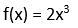

Question 1
What is the period of 4cos(9x)?
Answer
2 p /9
9 p /2
2/9
8/9
Question 2
The graph below can be a polynomial of degree 2 or more.

Answer
Question 3
The total amount accumulated in an account after 3 years is $8,000. The interest was compounded annually at a rate of 6%. What was the principal amount approximately?
Answer
$6,720
$6000
$5550
$6800
Question 4
Answer
10,9
9,10
6,5
5,6
Question 5
What is the value of AC from the ABC triangle below?
Answer
Question 6
Answer
rate of growth or decay
y-intercept
slope of the tangent line
x-intercept
Question 7
John invested $25000 in a savings account that earns an annual interest rate of 8%, compounded annually. How much money will he have after 3 years?
Answer
$31492.8
$31592.8
$31692.8
$31392.8
Question 8
What is the phase shift from the graph y = 51 cos(24x-5) +11 ?
Answer
5/24
p/12
-5/24
-p/12
Question 9
What is the phase shift of the function, 23
sin(7x+3)-7 ?
Answer
-3/7
3/7
-7/3
7/3
Question 10
Which of the following functions is NOT an example of a power function?
Answer

Question 11
How do the values of trigonometric functions change as the angle increases on the unit circle in a counterclockwise direction?
Answer
They depends on the specific function.
They increase.
They remain constant.
They decrease.
Question 12
Answer
increase rapidly as x increases
approach negative infinity as x approaches negative
infinity
have a positive x-intercept
decrease rapidly as x increases
Question 13
Which of the following options is an example of a polynomial function used to model a real-world situation?
Answer

Question 14
Answer
13177.103
51711056.2816
888844.23
777777.76
Question 15
Answer
Question 16
What are the equivalent expressions of sin(-2x) cos (-3x)
cosec(-5x) cot(-7x)?
Answer
-sin(2x)cos(3x)cosec(5x)cot(7x)
2sin(-x)3cos(-x)5cosec(-x)7cot(-x)
sin(2x)cos(3x)cosec(5x)cot(7x)
2sin(x)3cos(x)5cosec(x)7cot(x)
Question 17
Answer
Question 18
Answer
f(x) = 1/2
x= 2
x = 5
Do not exist
Question 19
What are the domain and range of log(4x+5) ?
Answer
(-5/4, ∞), (-∞, ∞),
(5/4, ∞), (0, ∞)
(-∞, ∞), (-∞, ∞)
(0, ∞), (-∞, ∞)
Question 20
How can the unit circle be utilized to determine the
values of trigonometric functions for any given angle?
Answer
By drawing a right triangle in the circle
By using a calculator or table of values
By measuring the angle in degrees
By memorizing the values of trigonometric functions